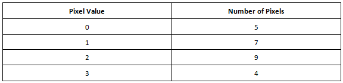

直方图均衡
图像的直方图是像素强度分布的图形表示。它可以估算像素值集中的位置以及是否存在异常偏差。例如 - 考虑以下图像。比如，所有像素值都具有2位的深度并且是无符号的。因此，像素的允许值范围是0-3。
正如您在上图中所看到的，有5个像素值0，7个像素值1，9个像素值2和4个像素值3。这些信息列表如下。
例图

图像的直方图通常以图形的形式呈现。下图表示上图的直方图。
统计分布图
直方图均衡化是图像处理中常用的技术，通过均衡强度分布来增强图像的对比度。它会使暗图像（曝光不足）不那么暗，而明亮图像（曝光过度）则不那么明亮。 上图的均衡直方图应理想地如下图所示。
直方图
.png)
但实际上，很难实现这种完美的直方图均衡。 然而，有各种技术来实现接近完美的直方图均衡。 在OpenCV中，有一个内置函数来均衡直方图。
理想的直方图

使用OpenCV对灰度图像进行直方图均衡
下面是演示如何使用OpenCV内置函数均衡灰度图像直方图的示例程序。#include <opencv2/opencv.hpp>
#include <iostream>
using namespace cv;
using namespace std;
int main(int argc, char** argv)
{
//读取图像
Mat image = imread("fly-agaric.jpg");
//检测失败
if (image.empty())
{
cout << "Could not open or find the image" << endl;
cin.get(); //等待键盘
return -1;
}
//转换成灰度图
cvtColor(image, image, COLOR_BGR2GRAY);
//直方图均衡化
Mat hist_equalized_image;
equalizeHist(image, hist_equalized_image);
//创建窗口
namedWindow("Original", WINDOW_NORMAL);
namedWindow("HistogramEqualized", WINDOW_NORMAL);
//显示图像
imshow("Original", image);
imshow("HistogramEqualized", hist_equalized_image);
waitKey(0); //等待键盘
destroyAllWindows(); //毁灭世界
return 0;
}
将上面的代码段复制并粘贴到IDE中并运行它。请注意必须在代码中将“fly-agaric.jpg”替换为计算机中图像的有效位置。然后你应该看到如下图所示的2张图像。
灰度图的直方图均衡化

使用OpenCV对彩色图像进行直方图均衡
在这个例子中，我将向你展示如何使用简单的OpenCV程序均衡彩色图像的直方图。#include <opencv2/opencv.hpp>
#include <iostream>
using namespace cv;
using namespace std;
int main(int argc, char** argv)
{
//读取图像
Mat image = imread("fly-agaric.jpg");
//检测失败
if (image.empty())
{
cout << "Could not open or find the image" << endl;
cin.get(); //等待键盘
return -1;
}
//从BGR转换成YCrCb颜色空间
Mat hist_equalized_image;
cvtColor(image, hist_equalized_image, COLOR_BGR2YCrCb);
//把图像3个通道分割出来; Y、Cr和Cb通道各别存在一个std::vector中
vector<Mat> vec_channels;
split(hist_equalized_image, vec_channels);
//只对Y通道进行直方图均衡化
equalizeHist(vec_channels[0], vec_channels[0]);
//重新合拼图像（YCrCB）
merge(vec_channels, hist_equalized_image);
//转换回BGR图像
cvtColor(hist_equalized_image, hist_equalized_image, COLOR_YCrCb2BGR);
//创建窗口
namedWindow("Original", WINDOW_NORMAL);
namedWindow("HistogramEqualized", WINDOW_NORMAL);
//显示图像
imshow("Original", image);
imshow("HistogramEqualized", hist_equalized_image);
waitKey(0); //等待键盘
destroyAllWindows(); //毁灭
return 0;
}
将上面的代码段复制并粘贴到IDE中并运行它。请注意必须在代码中将“fly-agaric.jpg”替换为计算机中图像的有效位置。然后你应该看到如下图所示的2张图像。
彩色图像的直方图均衡

说明
OpenCV使用BGR颜色空间加载彩色图像。利用该颜色空间，不可能在不影响颜色信息的情况下均衡直方图，因为所有3个通道都包含颜色信息。因此，你必须将BGR图像转换为像YCrCb这样的颜色空间。在YCrCb颜色空间中，图像的Y通道仅包含强度信息，其中Cr和Cb通道包含图像的所有颜色信息。因此，只应处理Y通道以获得直方图均衡图像而不改变任何颜色信息。处理完毕后，在调用imshow()函数之前，应将YCrCb图像转换回BGR颜色空间。Mat hist_equalized_image; cvtColor(image, hist_equalized_image, COLOR_BGR2YCrCb);加载的图像是BGR颜色空间。由于所有通道都包含颜色信息，因此无法处理此颜色空间的3个通道（蓝色，绿色和红色）以均衡直方图。因此，加载的图像应转换为YCrCb颜色空间。在该颜色空间中，Y通道仅包含强度信息，而Cr和Cb通道包含颜色信息。因此，仅需要处理Y通道以均衡直方图。
vector<Mat> vec_channels; split(hist_equalized_image, vec_channels);上述OpenCV函数将3通道图像分成3个独立的矩阵。每个矩阵都被推送到std::vector。vec_channels[0]包含Y通道，vec_channels[1]包含Cr通道，vec_channels[2]包含Cb通道。
equalizeHist(vec_channels[0], vec_channels[0]);上述函数均衡了Y通道的直方图。
merge(vec_channels, hist_equalized_image);merge是split的相反，他把存有3个通道信息的std::vector合拼成一个cv::Mat